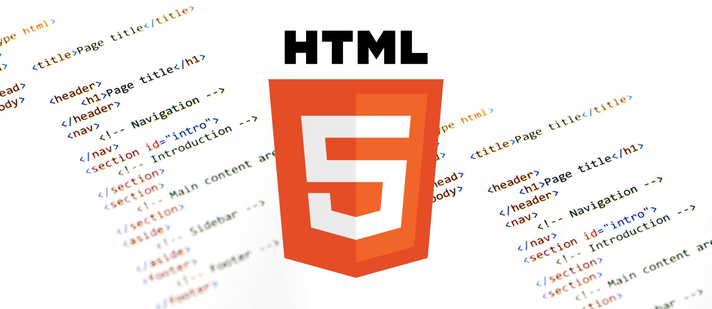

HTML5 (HyperText Markup Language, versión 5) es la quinta revisión del lenguaje HTML. Esta nueva versión (aún en desarrollo), y en conjunto con CSS3, define los nuevos estándares de desarrollo web, rediseñando el código para resolver problemas y actualizándolo así a nuevas necesidades. No se limita solo a crear nuevas etiquetas o atributos, sino que incorpora muchas características nuevas y proporciona una plataforma de desarrollo de complejas aplicaciones web (mediante los APIs).
HTML5 está destinado a sustituir no sólo HTML 4, sino también XHTML 1 y DOM Nivel 2. Esta versión nos permite una mayor interacción entre nuestras páginas web y el contenido media (video, audio, entre otros) así como una mayor facilidad a la hora de codificar nuestro diseño básico.
Caracteristicas
Aquí está la lista de las nuevas sintaxis, características añadidas en HTML5 y sus usos,
1. canvas: Dibujo 2D
2. video: Reproducción de vídeo
3. audio: Reproducción de audio
4. article, footer, header, NAV, section: elementos de contenido específico calendario, fecha, hora, email, URL, palabra clave: controles de formulario.
5. aside: Esta etiqueta de marca de contenido aparte del contenido de la página.
6. article: un elemento independiente del contenido
Historia HTML5

Podría decirse que HTML5 nació en 2004, cuando se fundó el grupo de trabajo WHAT con miembros de Apple, la Fundación Mozilla y Opera Software. Dos años después consiguieron uno de sus principales apoyos, pues el W3C (World Wide Web Consortium) decidió abandonar XHTML y comenzó a trabajar con WHAT.
2008 fue un gran año para este lenguaje, pues se finalizó su primera versión. Esto permitió que Firefox 3, el navegador de Mozilla, fuese compatible con HTML5. Más adelante se sumarían Internet Explorer, Google Chrome y Safari.
Poco a poco se fueron sumando compañías y se fue abandonando el uso de tecnologías como Flash. De hecho, en septiembre de 2011, 34 de las 100 páginas con más tráfico según el ranking de Alexa utilizaban este lenguaje.